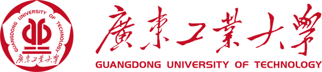

Ivan/Cheng Qian
Master’s student in Computer Science at Humboldt University of Berlin with a focus on Fullstack/iOS development, Process Science, and applied AR technologies.
Academic Experience:
Apr.2023 - Mar.2026
M.Sc. Computer Science
Humboldt University of Berlin
Currently pursuing Master's degree with focus on Human-Computer/AI Interaction, Process Science and Software Engineering.
2024/25
Exchange Semester
University of Zurich
Exchange program focusing on Blockchain Technology and Data Science.

Sep.2016 - Jul.2020
B.Sc. Computer Science
Guangdong University of Technology
Bachelor's degree with specialization in software development, AR-VR application and big data.
Active in programming competitions and tech communities.
Work Experience:
Sep.2023 - Jun.2024
IT/Business Consulting (Working Student)
Huawei Flagship Store Berlin
• Delivered exceptional customer service and contributed to a strong, tech-focused brand image in a flagship environment
• Consistently outperformed full-time staff in sales performance; recognized multiple times as top sales performer
• Identified and developed B2B business opportunities by aligning technical product knowledge with client needs
• Acted as a product specialist, communicating complex features of consumer electronics to a diverse customer base
• Consistently outperformed full-time staff in sales performance; recognized multiple times as top sales performer
• Identified and developed B2B business opportunities by aligning technical product knowledge with client needs
• Acted as a product specialist, communicating complex features of consumer electronics to a diverse customer base
Aug.2021 - Feb.2022
IT Specialist (Fulltime)
Apple Store, Guangzhou
• Ranked #1 in team for customer satisfaction (Net Promoter Score)
• Generated the highest number of qualified business leads in the team, contributing significantly to client portfolio growth
• Advised customers on personalized technical solutions across Apple’s product ecosystem, including troubleshooting, configuration, and integration
• Acted as a bridge between technical knowledge and user needs, delivering both high-level consultations and hands-on support
• Generated the highest number of qualified business leads in the team, contributing significantly to client portfolio growth
• Advised customers on personalized technical solutions across Apple’s product ecosystem, including troubleshooting, configuration, and integration
• Acted as a bridge between technical knowledge and user needs, delivering both high-level consultations and hands-on support